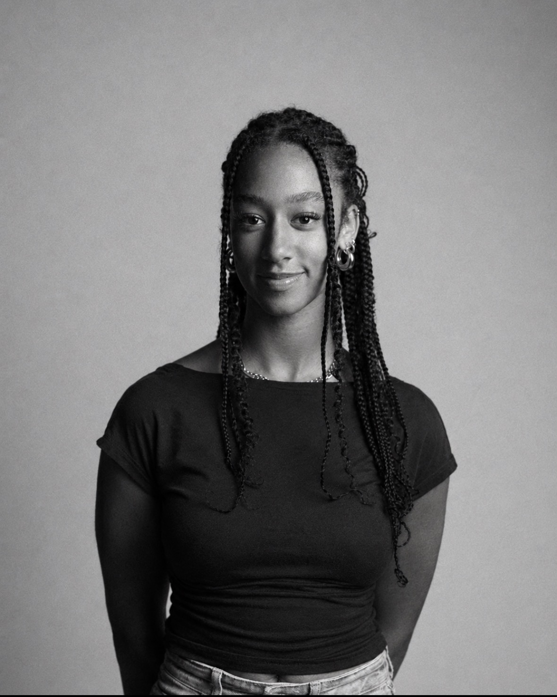

Wie ben ik?
Ik ben een creatieve CMD-student uit Breda met een passie voor grafisch ontwerp en visuele identiteiten. Ik houd ervan om merken en producten een eigen uitstraling te geven, van een sterke huisstijl tot een herkenbaar productontwerp. Daarnaast interesseer ik me voor UX/UI-design, waarbij ik me vooral richt op het visuele ontwerp en de interface.
Mijn ontwerpstijl is minimalistisch, rustig en overzichtelijk met een subtiel gebruik van kleur. Ik heb oog voor detail en vind het belangrijk dat een ontwerp niet alleen esthetisch sterk is, maar ook logisch en begrijpelijk voor de gebruiker. Met mijn creatieve en oplossingsgerichte aanpak werk ik graag aan ontwerpen die tot in de puntjes zijn afgewerkt en een duidelijk geheel vormen.
Creating with intention.

 cv
cv